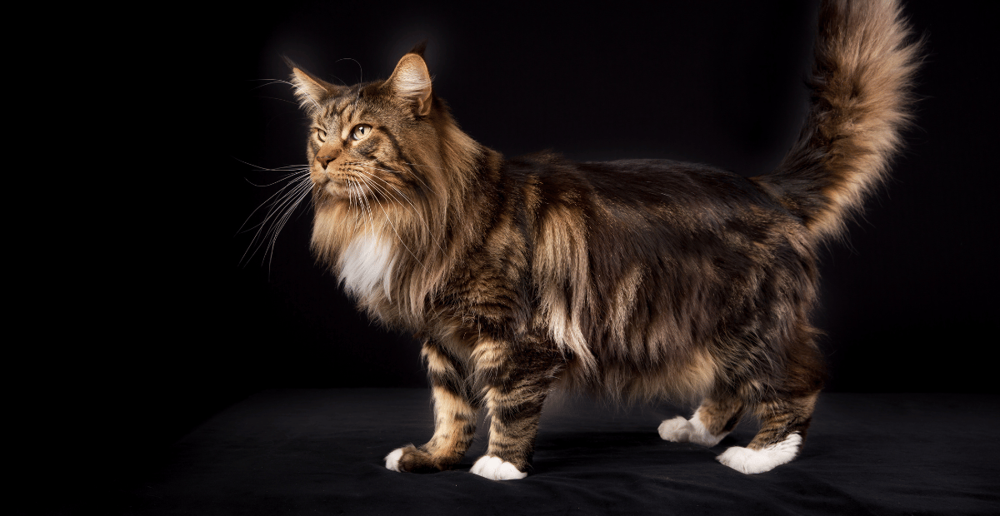
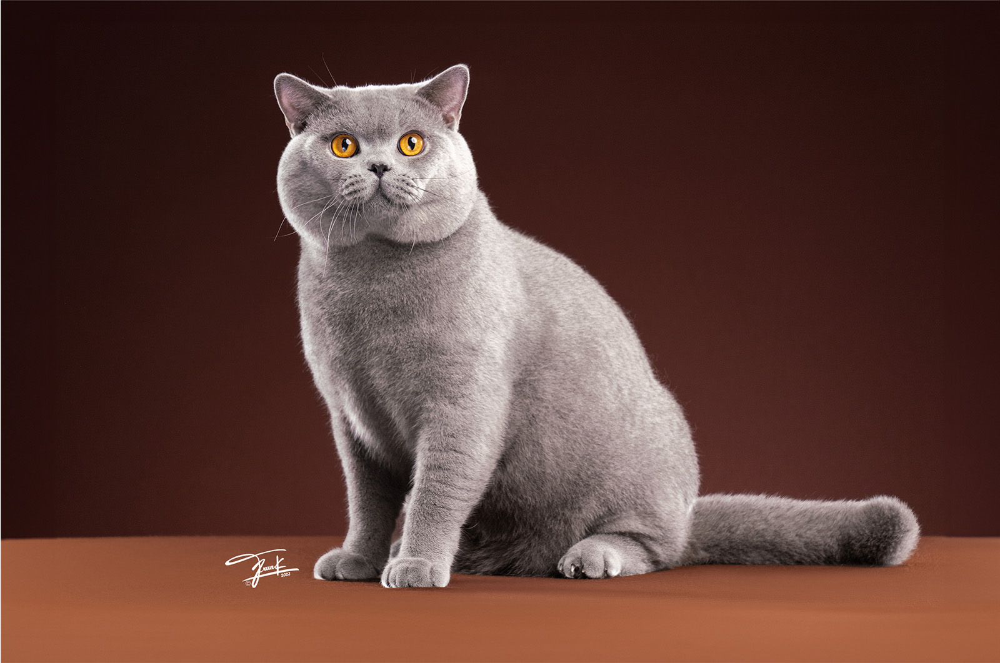

Jenis-Kucing
-

Kucing Menkun
Kucing Munchkin adalah ras kucing yang dikenal karena tubuhnya yang pendek dan kaki yang pendek. Karakteristik ini disebabkan oleh mutasi genetik yang mempengaruhi pertumbuhan tulang. Meskipun memiliki ukuran yang kecil, kucing Munchkin biasanya aktif, lincah, dan memiliki kepribadian yang ramah. Mereka juga sangat sosial dan senang berinteraksi dengan pemiliknya. Munchkin hadir dalam berbagai warna dan pola, menjadikannya ras yang cukup populer di kalangan pecinta kucing.

Kucing British Shorhairt
Kucing British Shorthair adalah ras kucing yang berasal dari Inggris. Mereka dikenal dengan ciri fisik khas, seperti tubuh yang kekar, kepala bulat, dan mata besar yang ekspresif. Bulu mereka pendek, padat, dan lembut, sering kali berwarna biru abu-abu, tetapi juga tersedia dalam berbagai warna dan pola